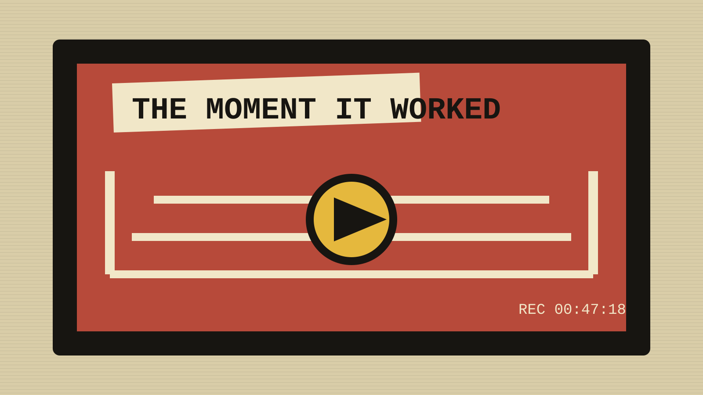

NOTE 04 OF 04 // VHS Save
Fine. The finish worked on me.

I saw the trick coming, complained about it in advance, and still sat forward when it happened.
I recognised the setup early enough to begin composing the complaint in my head.
The referee moved into precisely the wrong position. The camera lingered on precisely the right person. Commentary became suspiciously interested in an unrelated detail. I knew the turn was coming.
Then it came, the crowd reacted, and I sat forward anyway.

Predictable is not always bad. Sometimes the pleasure is watching the trap close exactly as promised. I reserve the right to deny writing this when the same finish happens three more times next month.